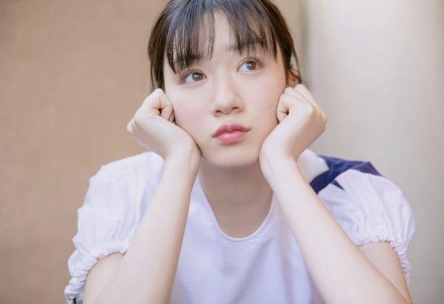

有村架纯
有村架纯（Arimura Kasumi），1993年2月13日出生于日本兵库县，日本女演员。作品《失恋巧克力职人》《垫底辣妹》《请叫我英雄》。

石原里美
石原里美，女，1986年12月24日出生于日本东京，日本女演员、主持人。凭借《非自然死亡》获得“CONFiDENCE日剧年度大奖2018”最佳女主角奖。
新垣结衣
新垣结衣（Yui Aragaki），1988年6月11日出身于日本冲绳县那霸市，日本演员、歌手及模特。2007年因主演电影《恋空》而成名，凭借该片获得第50届蓝丝带奖新人奖，第31届日本电影金像奖新秀演员奖

永野芽郁
永野芽郁（ながの めい、Mei Nagano），1999年9月24日出生于日本东京都，演员、模特，隶属于Stardust Promotion事务所。2015年，永野芽郁通过出演电影《俺物语！！》正式出道，之后出演了电视剧《真田丸》、《声恋》、电影《帝一之国》、《蜜桃女孩》等话题作品。在今年4月开始播出的NHK晨间剧《一半，蓝色》中，永野芽郁饰演了女主角榆野铃爱。